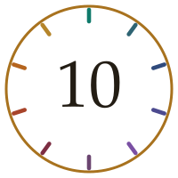

ICU and You · The Top Ten

A month of material, reduced to the ten things worth carrying
Twenty-two new pieces went up this month — the back half of early middle age, the whole of the late middle age fortnight, and two new columns. This is what survived the boiling down.
The Top Ten is the absolute distillation — the ten takeaways from everything published as new material in the month. Short, blunt, and chosen for one criterion only: would knowing this change what somebody does? Each links back to the piece it came from if you want the argument behind it.
If you read nothing else from November, read this page. It will take you four minutes.
Subscribers get it first. The Top Ten goes out with the newsletter a few days before it appears here — come and join us if you would rather not wait.
About ninety per cent of what a statin does to your muscles, a sugar pill does too.
SAMSON gave sixty people who had already abandoned statins twelve bottles, one a month, allocated at random and blinded: four of atorvastatin, four of placebo and four empty. Mean symptom score 16.3 on the drug, 15.4 on the placebo, 8.0 on nothing at all. Taking a tablet — any tablet — roughly doubled the symptoms. Shown their own data, about half went back on a statin, and nobody argued them into it. The attribution is usually wrong; the suffering is not.
Suicide is not behind them, and the peak is later than almost anyone guesses.
In 2023 the highest age-specific male suicide rate in Australia was in the fifty-five to fifty-nines, at 30.9 per 100,000 — above the forty-five to forty-nines at 27.3, and above the eighty-five and over group at 26.4. These deaths are more often planned than impulsive and frequently follow no contact with mental health services at all — so the chance to ask is very often a general hospital one. Ask a man of fifty-five as readily as a man of twenty.
You will be judged on stopping the pantoprazole, not on starting it.
In five Western Australian intensive care units, 184 patients were started on a proton pump inhibitor for prophylaxis and 90 of them — 48.9% — were still taking it when they left hospital. Nine of those ninety had a documented indication. REVISE shows the drug prevents clinically important bleeding, 1.0% against 3.5%, about forty treated to prevent one. It has never been shown to change mortality.
From Drugstore No. 4
The unadjusted figure reassures and the adjusted one does not.
Across 330,712 Australian intensive care admissions, Aboriginal and Torres Strait Islander patients arrived at a median age of 51.2 against 66.5 — fifteen years younger — with the same illness severity on arrival. Unadjusted twelve-month mortality was identical: 15.8% against 15.7%. Adjusted for age, diagnosis, severity and socio-economic status, 1.24. The first number is the one that gets quoted.
From Bare Bones No. 4
There is nothing on the NIHSS for the back of the brain.
The National Institutes of Health Stroke Scale has eleven items, and no item for vertigo, none for diplopia, none for dysphagia, and none for truncal ataxia unless it is bad enough to show in a limb. Dysarthria is the one posterior symptom that scores. A patient whose brainstem is infarcting can score too low to be judged eligible for a treatment that would have worked — so say out loud, when you ring, that the score is low and the picture is posterior.
From Your Presentations No. 4, Sarah Haydon
The PSA advice moved this year, and it moved back towards testing.
The 2026 Australian guidelines, built on a review of more than 28,000 research articles, offer two-yearly testing from 50 to 69 after an informed discussion. Action thresholds are 1.0 µg/L at 45 to 49, 3.0 at 50 to 69, and 5.5 at 70 and over, with an MRI before any biopsy. Two decades of movement away from screening has reversed — because the harms of a test depend on what happens next, and what happens next has changed.
On the ninety minutes after a lytic, we are now out of step with Europe.
Europe’s 2025 revision added three words to the front of the sentence — in select patients — which moves the default from continuing to stopping. ANZCOR Guideline 11.10, approved in July 2026, still carries 60 to 90 minutes with no qualifier. A colleague here who stops at thirty minutes is working against the letter of the document that governs them, while a colleague in Britain doing exactly the same thing is working within it.
A normal blood sugar does not exclude ketoacidosis, and the normal sugar is what does the harm.
On an SGLT2 inhibitor the glucose looks fine. The Australian definition is blood ketones above 1.0 mmol/L with a base excess below −5; under 14 mmol/L of glucose makes it euglycaemic. The error that hurts people is withholding insulin because the sugar is normal — insulin is what switches off ketogenesis, and the glucose infusion exists so that you can keep giving it. Measure blood ketones, not urine.
Smoking did not disappear. It concentrated — and some of what it concentrated into is not a cigarette.
Daily smoking in Australia fell from 24.3% in 1991 to 8.3% in 2022–23, one of the great public health wins of our working lives. But of the Australians who still smoke, 19.5% are in their fifties, up from 13.4% in 2001. And the usual question misses a whole form of it: among Lebanese women who use tobacco, 57% use a waterpipe against 26% of men, one hour at the pipe is 100 to 200 times the smoke volume of a cigarette, and the water filters nothing. Ask what they smoke, not whether.
Two in five Australian adults have high blood pressure, and almost two in three of those do not know it.
Among the eighteen to thirty-four-year-olds who have it, fewer than one in five has it treated and controlled. It is not that people are managing it badly — most have never been told there is anything to manage. It does not feel like anything, and the only way to find out before it has done damage is to put a cuff on an arm for a minute.
The music you got at eighteen is the music you keep, and it has nothing to do with whether it was any good.
The reminiscence bump: what you meet between about fourteen and twenty-four, peaking somewhere around eighteen, fixes and does not come unfixed. Not the best music, and not what you would choose now with the benefit of taste — the music that happened to be playing while you were becoming whoever you turned out to be. Worth knowing before you put something on in a relatives’ room, or for a patient who cannot tell you. From The Jukebox No. 2.
Which of the ten did you already know — and which one changed something?
I am interested in both halves. If nine of these were familiar, tell me, because that tells me where to pitch next month. And if one of them made you go and check something, that is the most useful thing you could send me.
How you are credited is entirely your call — by name, by initials, or not at all — whether you write the piece or I do, and whether I quote you or simply say who sent something in; nothing of yours goes up with your name on it unless you have said yes.
The button opens a reply straight to me. If your device blocks it, write to icuandyou@icloud.com instead.